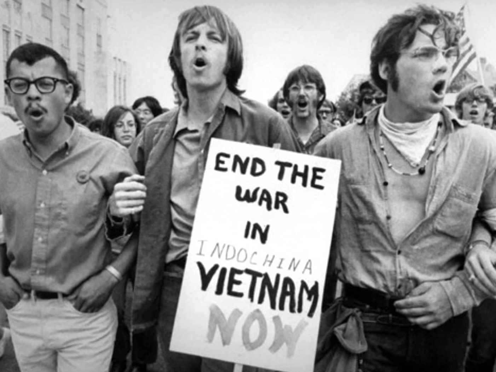

La revuelta fue tan grave que a finales de mayo el presidente francés, Charles de Gaulle, se reunió en secreto en Baden-Baden, Alemania occidental, con el general Jacques Massu, comandante de las fuerzas de ocupación francesas, para garantizar el apoyo de Massu en caso de que sus tropas fueran necesarias para recuperar París de los revolucionarios.
Al comienzo del año universitario francés en septiembre de 1967, la revuelta de los estudiantes era un fenómeno internacional. En mayo de 1968, se iniciaron eventos que comenzaron en un suburbio de París y pronto se le unió una huelga general eventualmente involucrando a unos 10 millones de trabajadores.
Durante gran parte de mayo de 1968, París se vio envuelta en los peores disturbios desde la era del Frente Popular de la década de 1930, y el resto de Francia estaba parado.
La revuelta fue tan grave que a finales de mayo el presidente francés de la Academia de París prohibía torpemente en la Sorbona un mitin en el que debían hablar estudiantes alemanes, italianos y españoles, no puede decirse que el movimiento haya estado realmente organizado.
En todas partes, y particularmente en Europa, los estudiantes comenzaron rebelándose contra una universidad que seguía siendo feudal con su élite de profesores y su inadaptación al mundo actual y no soportaban los campus universitarios inhumanos privados de todo contexto social. Acusaron a los responsables de no haber sabido ni prevenir ni actuar.
Los jóvenes franceses generalmente asumieron que vivían bajo una dictadura política cuasi benigna. Los dos principales partidos de oposición, los Radicales y el Socialistas, esencialmente se habían derrumbado, lo que significaba que el cambio político progresivo a través de canales parlamentarios convencionales estaba casi descartado. Fue, además, una era de apasionado “ Tercer Worldismo. ” Para esa generación de estudiantes, ni el Partido comunista francés ni ortodoxo marxismo tenía muchas atracciones. En cambio, sus ídolos eran Che Guevara, Ho Chi Minh, y Mao Zedong. Las imágenes de bombardeo de alfombras, napalm ataques y masacres de civiles por parte de las fuerzas estadounidenses en Vietnam — una antigua esfera de influencia francesa — dominó las noticias nocturnas. Por todas las razones anteriores, las universidades francesas eran un barril de pólvora.
Pero a esta protesta se sumó otra, de orden político: la protesta violenta de los estudiantes contra la guerra en Vietnam. Por todas partes, incluso en Estados Unidos. las estudiantes denunciaban así una nueva forma de imperialismo generado por el gran capitalismo del cual se sentían, además, las víctimas designadas.
En general, los estudiantes encontraron en el ejemplo de China la revelación de una verdad que el marxismo había ignorado en gran medida hasta entonces: una verdadera revolución económica y social sólo será posible si estuviera acompañada de una evolución cultural, es decir, primero de una evolución de la conciencia y de una profunda transformación del hombre.
¿Por qué adquirieron en Francia un aspecto tan radical? Las razones son múltiples y diversas.
Primero, fue allí donde la ley demográfica de la posguerra tuvo mayor dimensión y, a falta de una selección diferente de bachillerato, esa ola invade desde hace aproximadamente dos años la enseñanza superior. El gobierno no supo preverlos: de ahí los comienzos de ciclos universitarios difíciles, particularmente en las facultades nuevas como la de Nanterre, todavía sin construcción y cuyo alumnado se ha más que duplicado en dos años.
No es casual pues que Nanterre haya sido el primer y principal foco de la revuelta. La administración, que había adoptado primero una actitud liberal, se comprometió luego con una política represiva que, una vez desplegada, tuvo efectos acumulativos e irreversibles.
El cierre de la facultad, la comparecencia ante el consejo de disciplina de la universidad de los principales líderes del movimiento desplazaron de Nanterre a París el centro de los disturbios.
Una de las acciones judiciales contra Cohn-Bendit:
En enero de 1968, en una ceremonia de dedicación de una nueva piscina en el campus, el líder estudiantil Daniel Cohn-Bendit atacó verbalmente a François Missoffe, Ministro de Juventud y Deportes de Francia, quejándose de que Missoffe no había abordado las frustraciones sexuales de los estudiantes ’. Missoffe luego sugirió que Cohn-Bendit enfriara su ardor saltando a la piscina, con lo cual Cohn-Bendit respondió que el comentario de Missoffe era justo lo que uno esperaría de un régimen fascista. El intercambio le valió a Cohn-Bendit una reputación como provocador antiautoritario, y pronto adquirido un seguimiento casi culto entre los jóvenes franceses.
Una de las características del movimiento francés fue haber sabido conquistar para su causa a un número relativamente importante de auxiliares docentes y profesores que, sin ser revolucionarios, estaban de acuerdo con los estudiantes sobre el análisis de la crisis.
Sin embargo, su principal característica fue sin duda haber sumado luego a la clase obrera y haber sabido convencerla de que trabajadores y estudiantes defendían una causa común: la de una sociedad sin clases y verdaderamente democrática.
Los cuadros políticos y sindicales se empecinaban en hablar de reclamos, éstos comenzaron a su vez a cuestionar el régimen y el sistema social, y el diálogo entablado entre ellos y los estudiantes en favor de la ocupación de facultades y fábricas tuvo mucho que ver con el endurecimiento de la huelga. Pero ese mismo diálogo, al realizarse en las bases, por fuera de la burocracia cegetista y comunista cuya esclerosis denunciaba, terminó cuestionando las antiguas estructuras.
Fue un movimiento espontáneo, de una pureza un poco ingenua sin duda, ya que creyó que en pleno siglo XX las barricadas aún podían derrocar un régimen.
De esta manera,y cualesquiera sean sus consecuencias inmediatas o lejanas, la revuelta de los estudiantes fue mucho más que una revolución de palacio. En efecto, no sólo puso en tela de juicio dentro de la Universidad todas las jerarquías y todas las costumbres, sino que, en momentos en que la civilización inicia un nuevo camino, cuestiona el lugar y el papel de la vida cultural en la sociedad global e invita a cada uno de nosotros a preguntarnos, más allá de todo conformismo, sobre el sentido de la existencia y lo que constituye su valor.
Las huelgas y las manifestaciones estudiantiles continuaron hasta junio, el movimiento estudiantil gradualmente perdió impulso y el partido de De Gaulle obtuvo una rotunda victoria. Diez meses después, sin embargo, un similar gambito por de Gaulle — un referéndum nacional sobre la reorganización regional y la reforma del Senado — fracasó, y la carrera política del general llegó a un abrupto e ignominioso final.
El discurso de la vida cotidiana permitió a los sesenta y ocho abordar cuestiones fundamentales relacionadas con la calidad de la experiencia vivida en el mundo moderno. Les proporcionó una lente interpretativa para investigar existenciales preguntas que, desde el punto de vista del marxismo ortodoxo, permanecieron imperceptibles. Ofreció una estrategia de salida tanto del autoritario propensiones de la Jacobin y Leninista tradiciones y una ventana que se abrió a nuevas áreas de emancipación social, incluyendo feminismo, ecología, y derechos de los homosexuales.
El País. (3 de mayo de 2018). ¿Qué ocurrió en MAYO DEL 68? Youtube. Ver
Reveal. (12 de mayo de 2014). "All Power to the Imagination": Paris, May 1968: The Student Revolt Youtube. Ver
Bibliografía
Le Monde Diplomatique (2018). Explorador Especial 1968.
Artículos:
“El Mayo Francés ¿revuelta o revolución?” Guy Michaud (p.12-13).